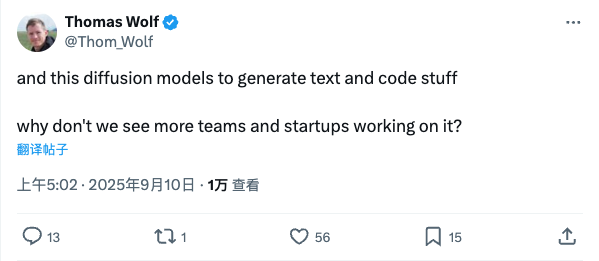
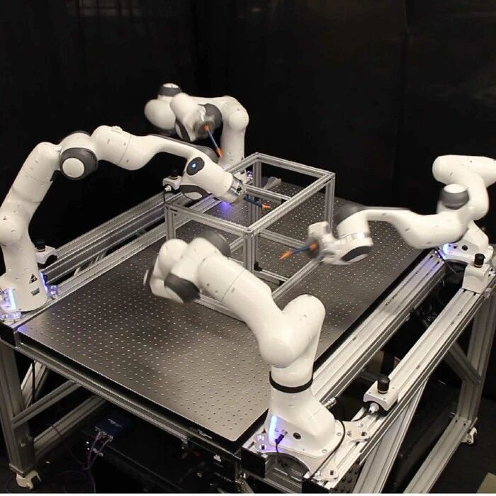
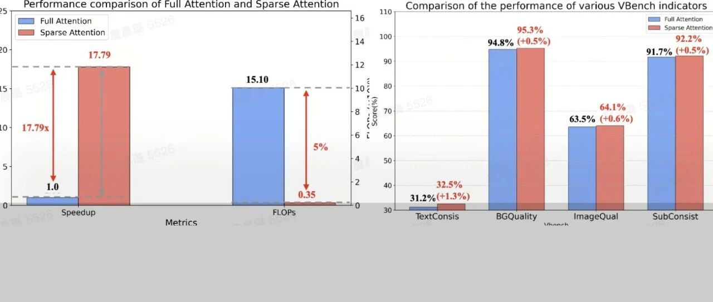

Twitter
OpenRouterAI_Welcomes NVIDIA and Launches Nemotron Nano 9B Model
Published: 2025-09-09T16:26:56.000Z

OpenRouter announced the welcoming of NVIDIA to its platform and the launch of its first model, Nemotron Nano 9B. This model is offered for free, features a 128k context window, is pre-trained from scratch with reasoning capabilities, and is ZDR-enabled. This marks a significant step for OpenRouter in building its model ecosystem, providing users with a high-performance and easily accessible AI model.
wavespeed_ai_Seedream 4.0 Launch: New Breakthrough in AI Image Generation
Published: 2025-09-09T10:14:20.000Z

WaveSpeedAI has officially launched Seedream 4.0, representing a significant advancement in the field of AI image generation. This cutting-edge version introduces several key features, including highly precise prompt editing, ensuring extreme fidelity and meticulous feature preservation in generated images. Furthermore, it boasts a deep understanding of user intent, facilitating more accurate and desired outputs. The system also supports versatile multi-image input and output capabilities, coupled with ultra-fast and ultra-HD rendering, designed to deliver an unparalleled image creation experience right from the initial concept phase.
Thom_Wolf_Exploring Diffusion Models in Text and Code Generation
Published: 2025-09-09T21:02:55.000Z

Prominent AI researcher Thomas Wolf, in a recent tweet, questioned why there aren't more teams and startups focusing on diffusion models for text and code generation. He highlighted the significant potential of these models in such applications, implicitly calling for greater attention and investment in this promising yet seemingly underexplored technological frontier, prompting reflection on its commercialization and industrialization progress.
natolambert_K2 Think Model Launch: A Mathematical Reasoning System Based on Qwen 2.5 32B
Published: 2025-09-09T17:40:47.000Z

Nathan Lambert retweeted and commented on Taylor W. Killian's announcement of the K2 Think model. K2 Think, built by LLM360, is based on Qwen 2.5 32B, distinct from LLM360's K2 65B base model. Primarily designed for mathematical reasoning, it has proven quite versatile and is now live as a deployed reasoning system at k2think.ai. Lambert also hinted at the team's further plans in the fully open-source space.
abeirami_LLM Nonlinear Reasoning and Human Cognition Challenges
Published: 2025-09-09T13:11:38.000Z

Ahmad Beirami and Minh Nhat Nguyen's tweets discuss the limitations of Large Language Models (LLMs) in simulating human-like nonlinear reasoning. Minh Nhat points out that current LLM reasoning and training are largely based on linear logic, failing to fully explore the inherent nonlinearity of human thought. Beirami humorously questions if anyone is training LLMs for nonlinear breakthrough reasoning akin to a "hangover shower breakthrough." This prompts reflection on the future direction of LLM development and the simulation of deeper cognitive abilities, emphasizing the necessity of moving beyond linear paradigms.
fchollet_Understanding vs. Memorization: Human Learning Superior to AI Models
Published: 2025-09-09T23:03:43.000Z

Prominent AI researcher François Chollet argues that a student who truly understands the physics principle F=ma possesses a superior ability to solve novel problems compared to a Transformer model that has merely memorized every physics textbook. This profound observation underscores the fundamental distinction between human understanding and AI's current reliance on pattern recognition and vast data memorization. It highlights a significant challenge for contemporary AI models in achieving true generalization and tackling unfamiliar scenarios, suggesting that deep comprehension remains a key differentiator.
wechat
Domestic Vidu Q1 Surprises with Reference-Based Image Generation, Achieving High Consistency and Realism
Published: 2025-09-09T23:30:27.000Z

Less than 10 days after Google's Nano Banana release, China's Vidu Q1 launched its "reference-based image generation" feature, marking a significant breakthrough in image synthesis. This new capability supports up to seven reference images, demonstrating exceptional performance in consistency, realism, clarity, and semantic understanding, surpassing Flux Kontext and rivaling Nano Banana. Vidu Q1 particularly emphasizes its "production-level application" potential. By ensuring robust subject consistency and offering extensive creative freedom, it effectively addresses common issues of instability and discontinuity in AI-generated content. This makes Vidu Q1 highly valuable for industries such as e-commerce, advertising, and media, signaling a new era where AI video and image generation tools become truly usable for professional scenarios.
DeepMind's RoboBallet: AlphaGo Author-Led System Enables Collision-Free Collaboration of 8 Robotic Arms, Published in Science Robotics
Published: 2025-09-09T23:30:27.000Z

DeepMind's latest research, RoboBallet, led by AlphaGo author Matthew Lai, innovatively integrates Graph Neural Networks (GNNs) with Reinforcement Learning (RL) to address complex motion planning, task assignment, and scheduling challenges in large-scale multi-robot collaboration. This system efficiently coordinates up to eight robotic arms, achieving collision-free operation with planning steps as fast as 0.3 milliseconds, and demonstrates remarkable zero-shot generalization capabilities. By modeling the scene as a graph structure and utilizing GNNs as the policy network, RoboBallet significantly enhances the efficiency and robustness of multi-robot cooperation in automated manufacturing. It offers a highly efficient and scalable solution for industrial applications, overcoming traditional algorithmic limitations in complex, high-dimensional environments.
Wenxin X1.1 Launched: Three Key Capabilities Highlighted with Hands-on Testing
Published: 2025-09-09T12:17:47.000Z
Baidu has officially launched Wenxin Large Model X1.1, demonstrating significant advancements in factuality, instruction following, and agent capabilities. Hands-on tests reveal its performance surpasses DeepSeek R1-0528 and is comparable to leading models like GPT-5 and Gemini 2.5 Pro. The article showcases its robust functionalities through practical examples such as intelligent customer service, code generation, and logical reasoning. Concurrently, Baidu has open-sourced the deep thinking model ERNIE-4.5-21B-A3B-Thinking, introduced the ERNIEKit development suite, and upgraded its PaddlePaddle framework to v3.2, comprehensively optimizing model training and inference efficiency. This strategic move underscores Baidu's commitment to a full-stack AI ecosystem, encompassing chips, frameworks, models, and applications, aimed at continuously lowering AI development barriers and empowering innovation for developers.
China's AI Overtakes with Domestic GPU Training! Transformer-Free, Native Brain-Inspired Spiking Large Model "SpikingBrain" Emerges
Published: 2025-09-09T13:30:52.000Z

“SpikingBrain,” a novel brain-inspired spiking large model developed by researchers from institutions including the Chinese Academy of Sciences, aims to overcome the limitations of Transformer architecture and reliance on NVIDIA GPUs. By adopting a linear complexity architecture and a pulse-based computing mechanism, SpikingBrain achieves significant breakthroughs in long sequence processing efficiency, domestic hardware compatibility, and low-power applications. The model successfully completed full-process training and deployment on domestic MetaX GPU clusters, validating the capability of China's AI software and hardware ecosystem to support large-scale model training. SpikingBrain's performance matches mainstream models, demonstrating over 100x inference speed improvement when processing 4M long sequences, and its spiking scheme boosts energy efficiency by 43 times. This marks a crucial step for China in independent AI innovation concerning foundational model architecture, training algorithms, and hardware adaptation. It offers an asymmetric competitive advantage by addressing the efficiency bottleneck of long sequences and enabling autonomous control over AI computing power, positioning China to potentially lead the development of next-generation AI technologies. This innovation paves the way for energy-efficient, self-reliant AI systems, reducing dependence on external supplies and fostering a robust domestic AI ecosystem.
Universal Problem Solver Prototype Emerges! Google DeepMind's Major Research Autonomously Discovers 40 New Algorithms
Published: 2025-09-09T21:39:20.000Z

Google DeepMind has unveiled a groundbreaking AI system prototype designed to automate scientific discovery and software development. Central to this system are the concepts of "empirical software" and "scoreable tasks," which transform open-ended scientific problems into quantifiable, optimizable engineering challenges. The system leverages large language models for code generation, execution, and scoring, guided by an AlphaZero-inspired PUCT tree search algorithm for intelligent iterative optimization. It achieves universality through ranking score normalization and integrates research ideas and method recombination via advanced prompt engineering. This AI has autonomously discovered 40 new algorithms, achieving significant breakthroughs in diverse fields such as bioinformatics, satellite image semantic segmentation, neuron activity prediction, time series forecasting, and numerical integration. By dramatically accelerating the scientific "trial-and-error" process, the system demonstrates immense potential for automating R&D workflows across various industries.
ByteDance Introduces Sparse Attention for Video Generation, Achieving 20x Computation Reduction and 17.79x Speedup
Published: 2025-09-09T23:30:27.000Z

Addressing the significant computational bottleneck of Full Attention mechanisms in Video Diffusion Transformer (DiT) models, particularly for high-resolution, long video generation, ByteDance has introduced the Bidirectional Sparse Attention (BSA) framework. This novel approach is the first to dynamically sparsify both Query and Key-Value pairs within 3D Full Attention, employing distinct dynamic sparsification strategies to enhance training and inference efficiency. BSA tackles the inherent sparsity and dynamic nature of attention computations in DiT. Specifically, it utilizes a Query-Sparse method to efficiently select optimal query tokens based on semantic redundancy and dynamic spatiotemporal characteristics, alongside a KV-Sparse method that dynamically identifies critical Key-Value pairs using statistical thresholds, adapting to varying input content without fixed sparse patterns. Extensive experiments demonstrate that BSA substantially accelerates DiT model training, achieving up to a 20-fold reduction in FLOPs and a remarkable 17.79-fold speedup in attention training. Crucially, it maintains or even surpasses the generation quality of Full Attention, while also significantly reducing inference latency from 31 seconds to 5.2 seconds (a 6.2x improvement). This breakthrough marks a significant efficiency revolution in the field of video generation, making high-quality, long video synthesis more practical and scalable.
GitHub
Jaaz.app
Published: 2025-09-10T01:49:47Z

Jaaz.app is an innovative open-source multimodal canvas creative AI tool, positioned as a privacy-first, locally deployable alternative to popular platforms like Canva. It features an advanced AI agent system that facilitates rapid image and video generation from a single prompt. Key functionalities include "Magic Canvas" and "Magic Video," allowing users to create content intuitively through simple sketching or step-by-step descriptions, with the AI instantly interpreting and generating results without the need for intricate text prompts. The platform supports integration with various leading AI models such as GPT-4o and Midjourney. Furthermore, Jaaz.app provides an infinite canvas for visual storyboarding, cross-platform compatibility for Windows and macOS, and robust enterprise-grade private deployment options, ensuring paramount data security and full commercial usage rights for its users.
AutoAgent: Fully-Automated & Zero-Code LLM Agent Framework
Published: 2025-09-01T03:00:03Z

AutoAgent is a cutting-edge, fully-automated, and zero-code large language model (LLM) agent framework designed to simplify the creation and deployment of sophisticated LLM agents through natural language interactions. It has achieved top performance on the GAIA Benchmark, showcasing capabilities comparable to advanced deep research agents. A key feature is its Agentic-RAG system, equipped with a native self-managing vector database, which surpasses industry-leading solutions. AutoAgent offers universal LLM support, flexible function-calling and ReAct interaction modes, and provides distinct user, agent editor, and workflow editor modes. This dynamic, extensible, and lightweight framework empowers users to effortlessly build, customize, and manage AI applications, making advanced LLM agent development accessible to all.
XLeRobot ü§ñ
Published: 2025-09-10T04:08:11Z
XLeRobot is an open-source, low-cost embodied AI robot platform designed to make embodied AI accessible to everyone, costing less than an iPhone. Built upon existing robust projects like LeRobot, it provides comprehensive guides from hardware assembly to software control. The platform supports various teleoperation methods, including keyboard and Xbox controllers, and features robust simulation capabilities. Focused on general manipulation and household tasks, XLeRobot offers an affordable experimental and development platform for robotics enthusiasts and researchers.
Daft: Unified Engine for Data Analytics, Engineering & ML/AI
Published: 2025-09-10T01:41:43Z

Daft is a distributed query engine implemented in Rust, supporting Python or SQL, designed for large-scale data processing, analytics, engineering, and ML/AI workloads. It offers a familiar interactive API, such as a Lazy Python Dataframe, and leverages a powerful Query Optimizer for efficient execution. Daft integrates seamlessly with data catalogs like Apache Iceberg and features a rich multimodal type-system, efficiently handling complex data types such as images, URLs, and tensors. Built on the Apache Arrow in-memory format, it ensures seamless data interchange. Its record-setting I/O performance is optimized for cloud storage integrations like S3. Daft is also built for interactive computing with intelligent caching and can scale to large clusters via native integration with Ray, making it ideal for both interactive data exploration and distributed environments.
Pathway AI Pipelines
Published: 2025-07-30T12:13:38Z

Pathway AI Pipelines provide a robust and efficient solution for rapidly deploying AI applications, specializing in high-accuracy Retrieval-Augmented Generation (RAG) and scalable enterprise AI search. These pipelines leverage the most current knowledge from various data sources, offering ready-to-use Large Language Model (LLM) App Templates that can be deployed on-cloud or on-premises. They seamlessly connect and synchronize with diverse data sources, including file systems, Google Drive, Sharepoint, S3, and Kafka, handling all data additions, deletions, and updates in real-time. A key feature is the built-in data indexing, enabling lightning-fast vector, hybrid, and full-text search capabilities, all managed in-memory with caching, thus eliminating external infrastructure dependencies. This comprehensive approach significantly simplifies the development and deployment of sophisticated AI applications, particularly for managing and querying vast document collections with continuously updated information.
System Prompts and Models of AI Tools
Published: 2025-09-08T16:52:23Z

This GitHub repository compiles over 20,000 lines of system prompts and model information from various AI tools, offering deep insights into their internal structure and functionality. It serves as a valuable resource for understanding how AI tools operate and critically highlights potential security vulnerabilities faced by AI startups concerning exposed system instructions and model configurations. The project also promotes a security audit service designed to help companies identify and protect their AI systems from potential data leaks.
huggingface
Paper2Agent: Reimagining Research Papers As Interactive and Reliable AI
Agents
Published: 2025-09-08T17:28:42.000Z

We introduce Paper2Agent, an automated framework that converts research
papers into AI agents. Paper2Agent transforms research output from passive
artifacts into active systems that can accelerate downstream use, adoption, and
discovery. Conventional research papers require readers to invest substantial
effort to understand and adapt a paper's code, data, and methods to their own
work, creating barriers to dissemination and reuse. Paper2Agent addresses this
challenge by automatically converting a paper into an AI agent that acts as a
knowledgeable research assistant. It systematically analyzes the paper and the
associated codebase using multiple agents to construct a Model Context Protocol
(MCP) server, then iteratively generates and runs tests to refine and robustify
the resulting MCP. These paper MCPs can then be flexibly connected to a chat
agent (e.g. Claude Code) to carry out complex scientific queries through
natural language while invoking tools and workflows from the original paper. We
demonstrate Paper2Agent's effectiveness in creating reliable and capable paper
agents through in-depth case studies. Paper2Agent created an agent that
leverages AlphaGenome to interpret genomic variants and agents based on ScanPy
and TISSUE to carry out single-cell and spatial transcriptomics analyses. We
validate that these paper agents can reproduce the original paper's results and
can correctly carry out novel user queries. By turning static papers into
dynamic, interactive AI agents, Paper2Agent introduces a new paradigm for
knowledge dissemination and a foundation for the collaborative ecosystem of AI
co-scientists.
Reverse-Engineered Reasoning for Open-Ended Generation
Published: 2025-09-07T18:07:58.000Z

While the ``deep reasoning'' paradigm has spurred significant advances in
verifiable domains like mathematics, its application to open-ended, creative
generation remains a critical challenge. The two dominant methods for
instilling reasoning -- reinforcement learning (RL) and instruction
distillation -- falter in this area; RL struggles with the absence of clear
reward signals and high-quality reward models, while distillation is
prohibitively expensive and capped by the teacher model's capabilities. To
overcome these limitations, we introduce REverse-Engineered Reasoning (REER), a
new paradigm that fundamentally shifts the approach. Instead of building a
reasoning process ``forwards'' through trial-and-error or imitation, REER works
``backwards'' from known-good solutions to computationally discover the latent,
step-by-step deep reasoning process that could have produced them. Using this
scalable, gradient-free approach, we curate and open-source DeepWriting-20K, a
large-scale dataset of 20,000 deep reasoning trajectories for open-ended tasks.
Our model, DeepWriter-8B, trained on this data, not only surpasses strong
open-source baselines but also achieves performance competitive with, and at
times superior to, leading proprietary models like GPT-4o and Claude 3.5.
UniVerse-1: Unified Audio-Video Generation via Stitching of Experts
Published: 2025-09-07T17:55:03.000Z

We introduce UniVerse-1, a unified, Veo-3-like model capable of
simultaneously generating coordinated audio and video. To enhance training
efficiency, we bypass training from scratch and instead employ a stitching of
experts (SoE) technique. This approach deeply fuses the corresponding blocks of
pre-trained video and music generation experts models, thereby fully leveraging
their foundational capabilities. To ensure accurate annotations and temporal
alignment for both ambient sounds and speech with video content, we developed
an online annotation pipeline that processes the required training data and
generates labels during training process. This strategy circumvents the
performance degradation often caused by misalignment text-based annotations.
Through the synergy of these techniques, our model, after being finetuned on
approximately 7,600 hours of audio-video data, produces results with
well-coordinated audio-visuals for ambient sounds generation and strong
alignment for speech generation. To systematically evaluate our proposed
method, we introduce Verse-Bench, a new benchmark dataset. In an effort to
advance research in audio-video generation and to close the performance gap
with state-of-the-art models such as Veo3, we make our model and code publicly
available. We hope this contribution will benefit the broader research
community. Project page: https://dorniwang.github.io/UniVerse-1/.
Saturation-Driven Dataset Generation for LLM Mathematical Reasoning in
the TPTP Ecosystem
Published: 2025-09-08T15:43:29.000Z

The scarcity of high-quality, logically sound data is a critical bottleneck
for advancing the mathematical reasoning of Large Language Models (LLMs). Our
work confronts this challenge by turning decades of automated theorem proving
research into a scalable data engine. Rather than relying on error-prone LLMs
or complex proof-assistant syntax like Lean and Isabelle, our framework
leverages E-prover's saturation capabilities on the vast TPTP axiom library to
derive a massive, guaranteed-valid corpus of theorems. Our pipeline is
principled and simple: saturate axioms, filter for "interesting" theorems, and
generate tasks. With no LLMs in the loop, we eliminate factual errors by
construction. This purely symbolic data is then transformed into three
difficulty-controlled challenges: entailment verification, premise selection,
and proof reconstruction. Our zero-shot experiments on frontier models reveal a
clear weakness: performance collapses on tasks requiring deep, structural
reasoning. Our framework provides both the diagnostic tool to measure this gap
and a scalable source of symbolic training data to address it. We make the code
and data publicly available.
https://github.com/sileod/reasoning_core
https://hf.co/datasets/reasoning-core/rc1
Revolutionizing Reinforcement Learning Framework for Diffusion Large
Language Models
Published: 2025-09-08T17:58:06.000Z

We propose TraceRL, a trajectory-aware reinforcement learning framework for
diffusion language models (DLMs) that incorporates preferred inference
trajectory into post-training, and is applicable across different
architectures. Equipped with a diffusion-based value model that enhances
training stability, we demonstrate improved reasoning performance on complex
math and coding tasks. Besides, it can also be applied to adapt block-specific
models to larger blocks, which improves sampling flexibility. Employing
TraceRL, we derive a series of state-of-the-art diffusion language models,
namely TraDo. Although smaller than 7B-scale AR models, TraDo-4B-Instruct still
consistently outperforms them across complex math reasoning tasks.
TraDo-8B-Instruct achieves relative accuracy improvements of 6.1% over
Qwen2.5-7B-Instruct and 51.3% over Llama3.1-8B-Instruct on mathematical
reasoning benchmarks. Through curriculum learning, we also derive the first
long-CoT DLM, outperforming Qwen2.5-7B-Instruct on MATH500 with an 18.1%
relative accuracy gain. To facilitate reproducible research and practical
applications, we release a comprehensive open-source framework for building,
training, and deploying diffusion LLMs across diverse architectures. The
framework integrates accelerated KV-cache techniques and inference engines for
both inference and reinforcement learning, and includes implementations of
various supervised fine-tuning and RL methods for mathematics, coding, and
general tasks. Code and Models: https://github.com/Gen-Verse/dLLM-RL
WebExplorer: Explore and Evolve for Training Long-Horizon Web Agents
Published: 2025-09-08T10:07:03.000Z

The paradigm of Large Language Models (LLMs) has increasingly shifted toward
agentic applications, where web browsing capabilities are fundamental for
retrieving information from diverse online sources. However, existing
open-source web agents either demonstrate limited information-seeking abilities
on complex tasks or lack transparent implementations. In this work, we identify
that the key challenge lies in the scarcity of challenging data for information
seeking. To address this limitation, we introduce WebExplorer: a systematic
data generation approach using model-based exploration and iterative,
long-to-short query evolution. This method creates challenging query-answer
pairs that require multi-step reasoning and complex web navigation. By
leveraging our curated high-quality dataset, we successfully develop advanced
web agent WebExplorer-8B through supervised fine-tuning followed by
reinforcement learning. Our model supports 128K context length and up to 100
tool calling turns, enabling long-horizon problem solving. Across diverse
information-seeking benchmarks, WebExplorer-8B achieves the state-of-the-art
performance at its scale. Notably, as an 8B-sized model, WebExplorer-8B is able
to effectively search over an average of 16 turns after RL training, achieving
higher accuracy than WebSailor-72B on BrowseComp-en/zh and attaining the best
performance among models up to 100B parameters on WebWalkerQA and FRAMES.
Beyond these information-seeking tasks, our model also achieves strong
generalization on the HLE benchmark even though it is only trained on
knowledge-intensive QA data. These results highlight our approach as a
practical path toward long-horizon web agents.